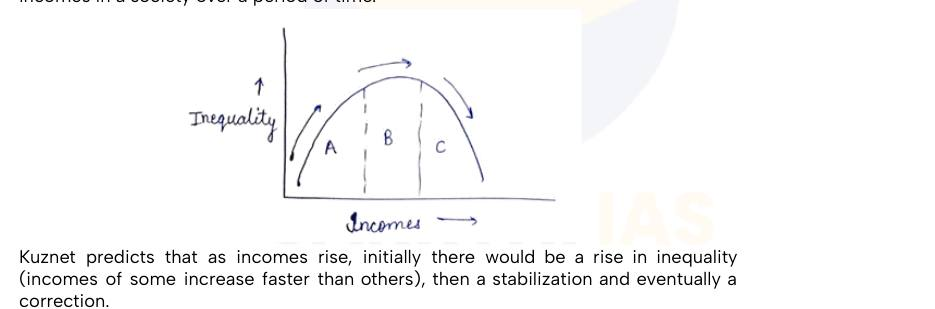
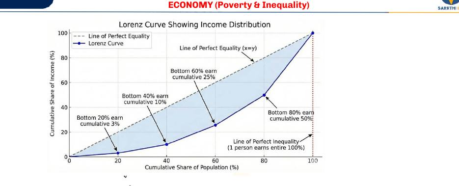
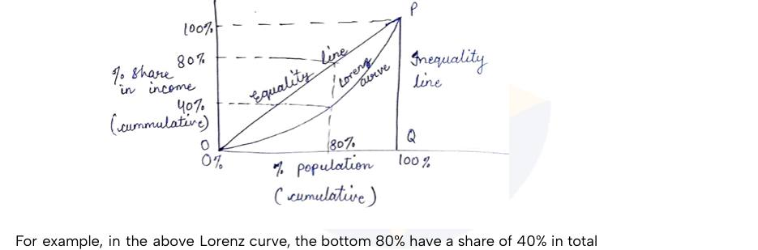
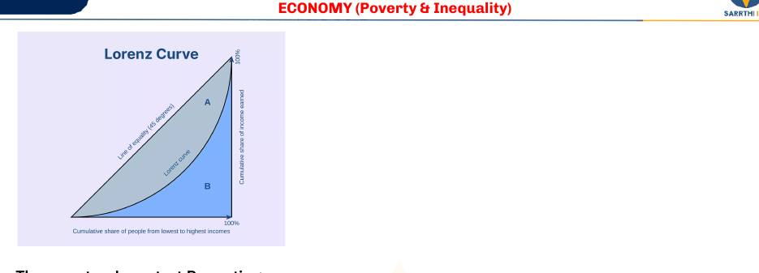

Relative poverty reflects inequality; the PGI ignores inequality among the poor; the Gini fell from 28.8 to 25.5 (2011-12 to 2022-23) in the Chapter 1 summary.
Economy · GS Foundation · Chapter 2
Inequality: Measures, Causes and Growth Models
Handout only: no class slidesHandout pages 27-35No PYQs quoted
What inequality is and why consumption is used, the Kuznets curve, the Lorenz curve and Gini coefficient (with four shortcomings), the reasons for inequality (natural advantages, Marx, modern reasoning and the rule of law), why growth causes inequality, and the two policy approaches: trickle-down and inclusive growth.
Chapter map#
- Inequality
What it is
- Differences in attainment hospital per 5 km2 example
- Measured by income, CE, wealth
- CE is most objective
Kuznets curve
- Theory, not data
- Inequality rises, stabilises, corrects
- Phases A, B, C unequal
Lorenz curve
- Data-based
- Sort, group, share, cumulate
- OP = equality, QP = perfect inequality
Gini
- A / (A + B)
- 0 to 1 higher = more unequal
- Four shortcomings not additive, same Gini, tails, subgroups
Causes
- Natural advantages birth, place, comparative
- Marx: capital vs labour
- Modern: survivorship, firm survival
- Rule of law: fair vs unfair means Competition Act 2002
Growth models
- Growth causes inequality
- Trickle-down: 4 conditions
- Inclusive: capability + opportunity
Exam lens: priority and PYQs#
What the handout itself stresses
| Signal in the handout | Where | Why it matters |
|---|---|---|
| Kuznets curve is "not a data-based curve, merely a theoretical expectation"; Lorenz curve is data-based | Section 2 | A clean statement trap: theory versus data. |
| Gini ranges 0 (perfect equality) to 1 (perfect inequality); a higher Gini means more inequality. Four shortcomings listed | Section 4 | The handout gives each with "The Concept" and "The Explanation". |
| Modern reasoning: it is about the nature of inequality, and the rule of law decides it | Section 5 | A Mains theme. The handout stresses that rule of law is more than a law. |
| Trickle-down works only if four conditions hold; inclusive growth rests on capability and opportunity | Sections 7-8 | A compare-and-contrast Mains question. The handout says the two are "essentially the same" with different emphasis. |
| Skill and inclusion readings named: National Skill Development Programme, PMKVY, Jan Dhan, Mudra, Economic Survey 2025-26 | Section 8 | The handout points to these for further reading. |
1 · What is inequality?#
Inequality is differences in the degree of attainment on various aspects of well-being. Example: one person lives where there is one hospital per 5 km² and another where there are two. Neither is probably facing pronounced deprivation, but the second's attainment is better than the first's. That is inequality. (Poverty is about a floor; inequality is about differences above it.)
- It can be economic, social or political, but it is generally measured through economic differences: income, expenditure and wealth.
- Like poverty, the preferred method is consumption expenditure (CE).
- Inequality measured through wealth is generally higher. But wealth and income are less truthfully revealed and highly volatile, so CE-based inequality, even though lower, is generally the most objective.
- The government generally measures consumption inequality because it lacks verifiable, regularly collected data on other measures.
2 · Kuznets curve: a theory#
The Kuznets curve is a theoretical prediction about how inequality relates to incomes in a society over time. Kuznets predicts that as incomes rise, inequality first rises (incomes of some grow faster than others), then stabilises, and eventually corrects.

- It is not a data-based curve, only a theoretical expectation.
- The phases A, B, C are not necessarily of equal or proportional lengths.
3 · Lorenz curve: a data-based picture#
The Lorenz curve (LC) is a data-based representation of existing inequality in income, CE or wealth.
How to plot the Lorenz curve
1 · Collect data
Income, CE or wealth, from the population or a sample
2 · Sort it
Generally in descending order (the handout's wording)
3 · Divide into equal-sized groups
For example 5 groups of 20% of the population
4 · Find each group's share
Total income of the group, hence its share in total income
5 · Plot cumulative shares
Example: bottom 20% have 3%, next 20% have 7%, so bottom 40% have a cumulative 10%. Join the points


Reading the curve
| Case | What the LC looks like |
|---|---|
| Perfect equality | Every group has the same share as any other group of the same size. The LC is the x = y line, OP: the line of perfect equality |
| Perfect inequality | One person has all the income, so the rest have zero. The LC runs along the x-axis until the very last point, then rises vertically: OQP, or simply QP |
| A real country | Lies between the two. The closer to the equality line, the more equal; the farther away, the less equal |
4 · Gini coefficient and its four shortcomings#
The Gini coefficient is a statistical measure of inequality calculated using the Lorenz curve. Let A be the area between the line of equality and the Lorenz curve, and B the area below the Lorenz curve.

- Range: 0 when A = 0 (perfect equality) to 1 when B = 0 (perfect inequality).
- An increase in Gini means an increase in inequality.
Shortcomings of the Gini (the handout's four)
| Shortcoming | The concept | The handout's explanation |
|---|---|---|
| 1 · Not easily decomposable or additive | You cannot do simple maths with Ginis to see the bigger picture | Average incomes of two states combine easily into one average. Ginis do not: State A at 0.3 and State B at 0.4 do not combine to 0.35. The maths is complex, so policymakers cannot easily say which region or sector drives overall inequality |
| 2 · Different distributions can give the same Gini | One number hides the shape of society | Society A: starving lower class, wealthy middle class, no billionaires. Society B: comfortable lower and middle class, but a few trillionaires hoarding half the wealth. Both could score 0.40, yet feel completely different |
| 3 · Reacts differently to transfers at the tails than in the middle | Over-sensitive to the middle class, somewhat blind to the extremes | A ₹10,000 gift between two middle-class people visibly improves the Gini. A multi-billionaire taking ₹10,000 from a destitute beggar (a transfer at the tails) barely moves it. It misses rising concentration at the very top |
| 4 · Hides demographic variation among subgroups | Blind to who the rich and poor are | A "low" Gini cannot show whether the old hold 90% of the wealth while youth face poverty, or whether one racial group or caste earns far less. It throws everyone into one pot |
5 · Why does inequality exist?#
(1) Natural advantages
These are accidents of birth or location that give some people a better chance at well-being: birth in a family of means or higher social status, better networks, inherited wealth. A place with better geography and fewer adverse events has better access to health, education and livelihood. Most inequalities can be explained by natural advantages or disadvantages, and they cannot be wished away.
But they cannot explain everything. Siblings in the same household can have very different outcomes. That is explained by comparative advantages and disadvantages: also natural, but not apparent at first. Example: an elder sibling is given responsibility earlier and is better prepared for such roles; a younger sibling may lean toward artistic or talent-based pursuits.
(2) Economic reasons: the Marxist view
- Marx: inequality results from differences in the ability of different groups to enforce their interests. The groups are those with capital and those with labour, and the interest is to take a larger share of revenue as profits versus wages.
- A firm gets factors of production as capital (entrepreneurship, capital, land) and labour. Revenue is split into wages and the retained profit. Both sides want a larger share.
- Capital is scarce and labour abundant, so labour's ability to bargain is low. Capital is concentrated in few hands, so providers keep a larger share as profit.
- To some extent this is fair: capital takes greater risk and deserves higher reward. But as revenue rises, profit's share keeps increasing while wages rise slowly, so initial inequalities compound over time. That growing inequality is the problem, according to Marx.
(3) Modern reasoning
a. A critique of the Marxist view. The handout says Marxist reasoning has survivorship bias: it uses only the information that is visible.
- Profits do rise faster than wages at a broad level. But adjust profits for the losses of firms that shut down and the growth rate is not very different.
- Most firms that start today shut down within 10 years. Marxist reasoning considers only profit, which belongs to the firm that survives.
- There are periods when profits decline but wages do not. Over a longer term, profits and wages grow at a similar rate.
- Why do profits still rise quickly? Surviving firms grow because of market growth and because of larger market share after other firms close. Wages grow only with market size, since the number of workers stays mostly stable.
- Marxism is "obviously not wrong" (it rightly points to unequal ability to enforce interests) but it underplays the low survival rate of firms versus a stable worker count.
- So firms see that the key to exceptional profit is survival and market share. The means they choose decide the kind of inequality a society has.
b. The political-legal system: the rule of law. Every firm wants to survive and to monopolise; when market share rises, profits rise sharply. There are two routes to more share:
| Fair means | Unfair means | |
|---|---|---|
| What firms do | Better goods and services through R&D, risk-taking, innovation, hiring skilled workers and paying them well | Exploit position and connections with lawmakers and enforcers, making it hard for others to compete |
| Under a strong rule of law | Firms are pushed to this route, since connections are not exploited and violators are punished | Strong disincentive |
| Under a weak rule of law | Fair players fall; wrongdoers get away | Firms lack integrity and ignore workers, consumers, minority shareholders and society |
| Outcome | They still monopolise and inequalities emerge, but society benefits. Such inequality is tolerable and "good" | Everyone loses except the owners (and only briefly). Inequality gives bad outcomes |
6 · Growth and inequality#
- Growth, by its design, is inequality-causing. Faster growth happens when limited resources go where growth potential is higher, in sectors or places that can use them more efficiently.
- Faster growth means more employment and a faster fall in poverty, which is desirable.
- But if resources are focused on certain sectors, regions or industries, the incomes of those grow faster, so inequality rises. Growth is "not without its costs".
- To correct this, governments have tried models of growth that aim for faster growth with less inequality. The handout stresses these are not mathematical models but general policy approaches, and by the end you see both are essentially the same, differing in emphasis.
7 · Trickle-down approach#
The intent is focus: maximum output in least time. The government focuses scarce economic, technological, human and natural resources, through policy, on sectors or regions with potential for faster growth. The expectation is a multiplier effect: one sector grows and pulls the whole economy up, while evenly spread resources would give only an average rate.
- Benefits can trickle down naturally to nearby areas, sectors and people, but it may take a long time, and those left out just keep waiting.
- So the government accelerates it by redistributing benefits to those at the bottom.
Four conditions for trickle-down to work
| # | Condition |
|---|---|
| 1 | The chosen sector grows |
| 2 | The government is able to collect more taxes from that growth (high taxation efficiency) |
| 3 | The government decides to redistribute, i.e. spends on those left out instead of reinvesting in the same or a related sector |
| 4 | Efficiency of redistribution is high: benefits reach the intended beneficiaries |
8 · Inclusive growth#
The handout calls trickle-down a pro-poor model that relies on the government moving the benefits of growth to the bottom. Being "brutally honest": the benefits do not rightfully belong to the bottom, since they did not contribute to growth, which is driven largely by those at the top. The top contributes and so keeps most of the benefits. The bottom's only "sacrifice" was not getting special policy focus, and schemes for the poor are a payment for it. So the poor get benefits only at the government's discretion, transfers often fail and inequality stays.
Inclusive growth is based on the premise that growth should be broad-based: it must include as many sections of society and the economy as possible, driven not only by the top but also by the bottom. The aim is to move those at the bottom from passive recipients of growth's benefits to active contributors, with a rightful claim on its fruits. It has two pillars:
The two pillars of inclusive growth
Pillar 1 · Capability
Identify the poor and vulnerable
Identify backward regions
Find key reasons for backwardness or vulnerability
Disasters, poor health and nutrition, weak institutions including economic ones like agricultural markets, youth migration
Focused interventions based on those reasons
Skills, basic healthcare, quality education for all
Skills are dynamic, so link them to evolving industry needs, with incentives and hand-holding
Pillar 2 · Opportunity
Job creation through industrial development
Especially labour-intensive industry
Shift from job-seeking to job-creating
An entrepreneurship culture
Improve ease of doing business (EoDB)
Contract enforcement (judicial reforms), easier registration, land acquisition
Reduce or share entrepreneurial risk
Access to capital
For example guarantees to banks on the borrower's behalf; this needs financial inclusion
Trickle-down versus inclusive growth
| Trickle-down | Inclusive growth | |
|---|---|---|
| Idea | Focus resources on high-growth sectors; let benefits reach the bottom | Broad-based growth that includes the bottom as contributors |
| Bottom's position | Passive recipient of benefits | Active contributor with a rightful claim |
| Role of government | Redistributes benefits (at its discretion) | Builds capability and provides opportunity |
| Weakness | Fails if any of four conditions fails; inequality becomes permanent | Takes effort on skills, institutions, credit and enterprise |
Timeline and numbers#
- Competition Act: the handout's example of a law that is only one part of the rule of law
- Consumption-based Gini 28.8 (from the handout's summary in Chapter 1)
- Consumption-based Gini 25.5
- Median earnings of the top 10% are 13 times those of the bottom 10%★
- Economic Survey 2025-26: the handout's pointer for skills, health, education and support to industry
Connects to#
Unemployment handout (next in your PDF)
Refers back to "our discussion on inclusive growth" and to the same schemes. The capability pillar (skills) and opportunity pillar (jobs) are the structure behind youth unemployment.
National Income Accounting handout
Covers the Inequality-adjusted HDI (IHDI), which discounts HDI for inequality in health, education and income: the Gini and Lorenz ideas at work in a development index.
Banking and NBFCs handout
Financial inclusion (PM Jan Dhan Yojana, 2014) is the "access to capital" requirement of the opportunity pillar.
Budget and Fiscal Policy handout
Redistribution, taxation and who should receive free foodgrains are the fiscal side of trickle-down conditions 2 to 4.
Recall sheet#
Read once, hide it, then rebuild the chapter from memory.
- Inequality = differences in attainment on aspects of well-being. Measured through consumption expenditure (most objective); wealth inequality is higher but less reliable.
- Kuznets curve: theory, not data. Inequality rises, stabilises, then corrects as incomes rise. Phases A, B, C unequal.
- Lorenz curve: data-based. Sort, group, find shares, plot cumulative. OP = equality line; QP (OQP) = perfect inequality.
- Gini = A/(A+B); 0 to 1; up = more inequality.
- Four Gini shortcomings: not decomposable; same Gini for different distributions (0.40 example); tails versus middle transfers; no demographic detail.
- Causes: natural advantages (birth, place, comparative); Marx (capital versus labour, compounding); modern (survivorship bias, firm survival, market share); rule of law (fair versus unfair means, Competition Act 2002, good versus bad inequality).
- Growth causes inequality by focusing resources; models try to keep growth with less inequality.
- Trickle-down: four conditions (sector grows, tax efficiency, decision to redistribute, redistribution efficiency). Fails often; inequality becomes permanent.
- Inclusive growth: capability (identify poor and regions, reasons, focused interventions, skills, health, education) and opportunity (jobs, entrepreneurship, EoDB, risk sharing, capital with financial inclusion).
- Blank page: draw Lorenz with OP and QP, shade A and B, then write the four shortcomings.
Test yourself#
Practice questions below are written from the handout. They are not past-year questions.
Quick quiz
0 / 0 correct
Mains practice: answer skeletons
Try the answer on a blank page first, then open the skeleton.
Distinguish the Kuznets curve from the Lorenz curve. How is the Gini coefficient derived from the latter?
Intro: One is a theory about how inequality moves with income, the other is a picture of inequality at a point in time.
- Kuznets: theoretical, not data-based; inequality rises, stabilises, corrects; phases unequal.
- Lorenz: data-based; sort, group, find shares, plot cumulative shares.
- Equality line OP; perfect inequality QP.
- Gini = A/(A+B), range 0 to 1.
Closing line: Kuznets tells a story, Lorenz shows the facts, and Gini compresses the facts into a number.
"The Gini coefficient alone cannot describe inequality." Discuss.
Intro: A single number can hide the shape and the people behind it.
- Not decomposable: states' Ginis cannot be simply averaged.
- Same Gini, different societies (0.40 example).
- Insensitive to transfers at the tails; sensitive in the middle.
- Blind to age, race, caste and other subgroups.
- So use Lorenz, subgroup data and wealth concentration along with it.
Closing line: Use Gini as a thermometer, not a diagnosis.
Why does inequality exist? Compare the Marxist and modern explanations.
Intro: Inequality has natural, economic and institutional roots.
- Natural advantages: birth, place, comparative advantages between siblings.
- Marx: capital versus labour bargaining; profits compound.
- Modern: survivorship bias; firms seek survival and market share.
- Means chosen decide the nature of inequality: fair versus unfair, set by rule of law (Competition Act 2002 is one part only).
Closing line: The question is not whether inequality exists but what kind.
Why does growth cause inequality? Why does trickle-down often fail?
Intro: Growth concentrates scarce resources where returns are highest.
- Focus on high-potential sectors raises their incomes faster.
- Trickle-down needs four conditions: sector grows, tax efficiency, decision to redistribute, redistribution efficiency.
- When one fails, inequality becomes permanent.
- Benefits reach the poor only at government discretion.
Closing line: Trickle-down hopes the benefit flows down; it has no way to make it.
Explain inclusive growth. How does it improve on the trickle-down approach?
Intro: Inclusive growth makes the poor contributors to growth, not recipients of charity.
- Premise: broad-based growth with a rightful claim for all.
- Capability: identify poor and regions, causes, focused interventions, skills, health, education, recognising behaviour.
- Opportunity: labour-intensive jobs, entrepreneurship, EoDB, risk sharing, access to capital (financial inclusion).
- Both approaches are essentially the same with different emphasis.
Closing line: Growth is inclusive when the bottom helps make it and so rightfully shares it.
Flashcards
Tap the card to flip.